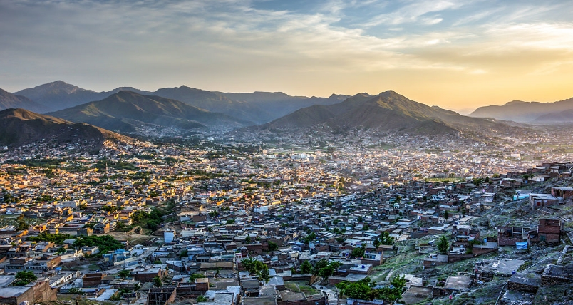

Mingora
Mingora the center of economic activities and the only urban area of the valley is adjacent to Saidu Sharif t offers traditional, Pakistani and western food outlets, restaurants and hotels. Locally produced beautifully displayed at its main bazaar, shops, show rooms etc. include semi-precious stones, embroidered dresses, hand woven ladies shawls, bed sheets and woodwork. Traditional ornaments and antiques are available at shops. Visitors on trips to Swat valley usually stroll in its bazaars for shopping at the end of their journey can find emerald mines in hills northward of the city famous worldwide for their expensive and valuable emeralds
